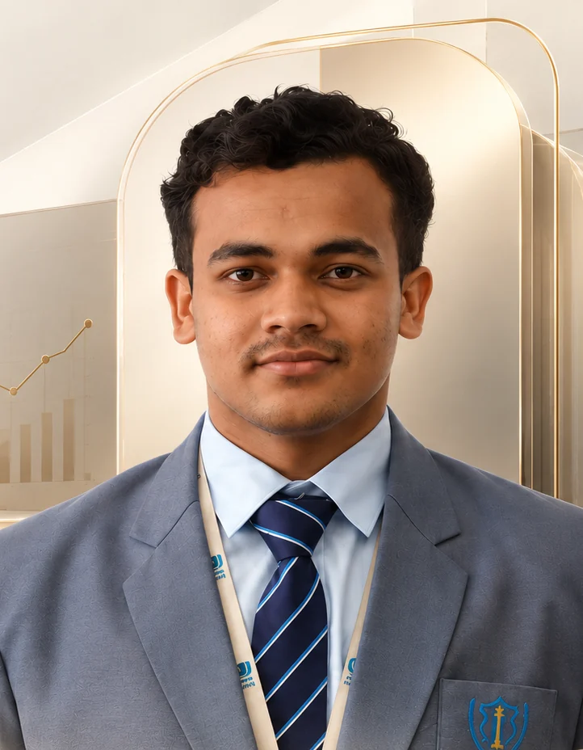

About
An emerging finance professional.
My work sits across audit and accounts, financial analysis, equity research and capital markets. I'm currently pursuing a PGDM in Finance in Pune, with a Class of 2027 completion.
My route into finance started outside it — a B.Sc. in Physics, Chemistry and Mathematics from RTM Nagpur University (2021–2024), which built the quantitative habits I now apply to statements, ratios and market data. I completed an audit & accounts internship at G M Achhra & Associates, a chartered accountancy firm, where I vouched transactions, scrutinised ledger accounts, verified GST entries, worked on accounting entries in Tally Prime and used Excel for transaction-level verification and reconciliations.
Before that, an equity research internship at Finsckool gave me exposure to financial statement analysis, business analysis, fundamental and technical analysis, and IPO-oriented research.
On the side, I run an independent study of the markets with a documented process — technical analysis, price action, position sizing, stop losses and journaled trading practice — and I write about finance on LinkedIn, where my posts have drawn 100K+ impressions.
The nine projects on this site trace that path: from independent market research, through internship-led equity research, into structured academic work in forecasting, risk, corporate actions, credit and tax.

Key facts
| Name | Bhojraj Kamdi |
|---|---|
| Programme | PGDM — Finance |
| Class | 2027 |
| Base | Pune, India |
| Primary focus | Audit & Assurance |
| Also | Financial Analysis · Equity Research |
| Internships | CA-firm audit & accounts · Equity research |
| Credential | NISM Series V-A |
03 / Education
Science first, then finance.
01 / Thinking
Two frameworks, applied daily.
The analytical framework shapes how I approach research and projects. The audit approach shapes how I check work properly.
Analytical framework
A personal analytical framework — not an institutional methodology.
Audit thinking approach
A practical approach developed through audit internship work — not an official auditing standard.
04 / Working approach